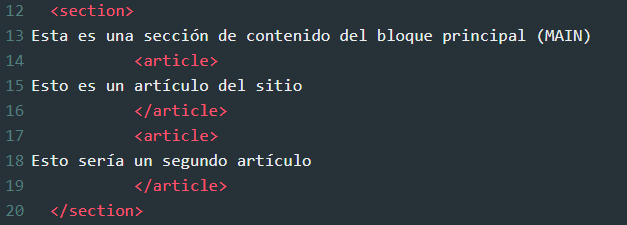
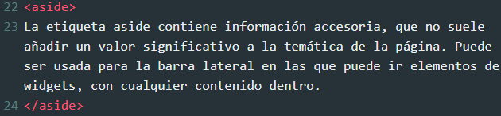
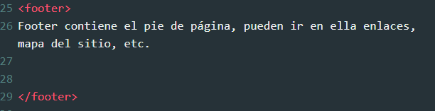
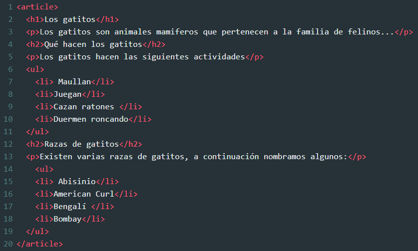

La estructura de una página HTML5 está conformada por una variedad de elementos que adquieren un alto valor semántico en comparación a las anteriores versiones de HTML, ahora contamos con nuevas etiquetas que poseen significado para estructurar adecuadamente una página web con HTML5, y en este curso aprenderemos a utilizarlos.
A continuación conozcamos las nuevas etiquetas destinadas para crear una estructura de página HTML5.
Nos enfocaremos en cuatro etiquetas: section, aside, footer y article.
Elemento que contiene una sección, parte o pieza de un contenido. También es un contenido semántico. Los elementos que están dentro de section están relacionados entre si para formar un contenido con significado propio.
Ejemplo:
El Doctype o “Declaración del tipo de documento” es una instrucción especial que va al inicio de nuestro documento HTML y que permite al navegador entender qué versión de HTML estamos utilizando. Esta información determinará la manera en la que el navegador procesará el documento, un DOCTYPE distinto podría implicar hasta una visualización diferente del sitio web dentro del mismo navegador..
Ejemplo:
Este elemento prácticamente contiene el pue de página, dentro pueden ir como ejemplo iconos de redes sociales, datos de contacto, terminos del servicio, etc.
Ejemplo:
Básicamente article es un elemento semático y su contenido será autónomo e independiente, posee sentido por sí solo.
Ejemplo:
article podría contener por ejemplo un artículo de un sitio, o la noticia de un sitio de noticias o un comentario de un post. Cuando article está dentro de un bloque mayor, entonces el contenido está relacionado con el contenido del bloque mayor.